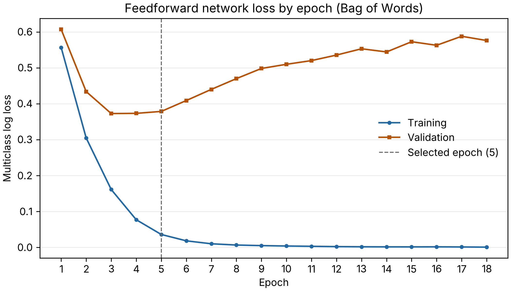
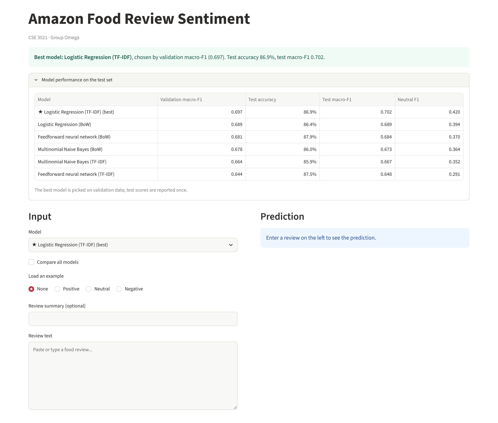
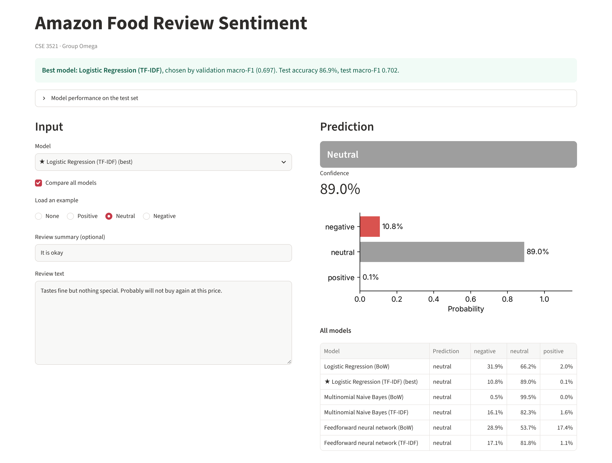

streamlit run app.py (deployed URL pending)We classify Amazon Fine Food reviews as negative (1 to 2 stars), neutral (3 stars), or positive (4 to 5 stars). All models use the same 46,344-review seed-46 dataset and the same stratified split: 30,123 training, 6,952 validation, and 9,269 test reviews. The model input is the review summary and body joined by a space. Hyperparameters and checkpoints were chosen on the validation split only, and each model was scored once on the test split. Positive reviews make up 78% of the data and neutral only 7%, so we rank models by macro-F1, which weights the three classes equally, rather than by accuracy.
| Model | Accuracy | Macro precision | Macro recall | Macro F1 | Neutral F1 | Training time (s) |
|---|---|---|---|---|---|---|
| Majority class (always positive) | 0.779 | 0.260 | 0.333 | 0.292 | 0.000 | n/a |
| Naive Bayes, Bag of Words | 0.860 | 0.674 | 0.672 | 0.673 | 0.364 | 3.2 |
| Naive Bayes, TF-IDF | 0.859 | 0.668 | 0.668 | 0.667 | 0.352 | 3.7 |
| Logistic Regression, Bag of Words | 0.864 | 0.679 | 0.700 | 0.689 | 0.394 | 43.4 |
| Logistic Regression, TF-IDF (best) | 0.869 | 0.690 | 0.717 | 0.702 | 0.420 | 21.0 |
| Feedforward neural network, Bag of Words | 0.879 | 0.726 | 0.654 | 0.684 | 0.370 | 46.9* |
| Feedforward neural network, TF-IDF | 0.875 | 0.738 | 0.608 | 0.648 | 0.291 | 21.0** |
Every model uses the same text features. Reviews are lowercased, HTML tags such as <br /> are removed, and "n't" is expanded to "not". We keep unigrams and bigrams that appear in at least two training reviews, which gives 192,646 features. Bag of Words stores raw counts. TF-IDF uses 1 + log of the count, scales each term by how rare it is across reviews, and normalizes each review to unit length, so long reviews and very common words carry less weight. Logistic Regression was tuned over C (0.01 to 10) and class weighting. Balanced class weights won for both feature sets because without them the model rarely predicts neutral: at C = 1 on TF-IDF, validation macro-F1 was 0.619 unweighted and 0.686 balanced. TF-IDF preferred weaker regularization (C = 3) than counts (C = 0.1), since its values are small fractions while counts can be large. TF-IDF also trained in half the time (21 s against 43 s), because normalized features let the optimizer converge in fewer steps. The terms with the largest weights toward neutral are "but", "ok", "however", "okay", "not bad", and "not great". The last two exist only because we kept bigrams and expanded "n't".
Logistic Regression with TF-IDF has the highest validation macro-F1 (0.697) and the highest test macro-F1 (0.702), so it is our best model and the default in the app. It finds 44% of neutral reviews, against 35% for Naive Bayes and 31% and 21% for the Bag of Words and TF-IDF networks. Three course ideas explain the ranking.
Feature weighting. Naive Bayes assumes words are independent given the class and multiplies one probability per word. A three-star review that says "great flavor but disappointed with the size" gets pushed hard toward whichever side has more strong words. Logistic Regression is discriminative. It learns one weight per feature directly from the labels, so it can give mixed-review markers such as "but" and "not bad" their own weight toward neutral instead of treating them as weak evidence for positive or negative. With balanced class weights, mistakes on the 7% neutral class cost as much in the loss as mistakes on the 78% positive class.
Capacity. Each network has about 6.2 million weights (192,646 inputs into 32 hidden units, then 16, then 3), against 578,000 for Logistic Regression. With only 30,123 training reviews, and 2,206 of them neutral, the extra capacity went into memorizing the training set: training loss fell below 0.003 for both networks while validation loss rose after epoch 3 (Bag of Words) or epoch 8 (TF-IDF) (Figure 2). The networks were trained without class weights, so they learned to favor the majority class. The two networks have the highest accuracy (0.879 and 0.875) and the highest macro precision (0.726 and 0.738) because they predict positive for 97 to 98% of positive reviews. The TF-IDF network also labels 62% of neutral reviews and 30% of negative reviews as positive, and even the better Bag of Words network labels half of neutral reviews as positive. Accuracy rewards that behavior on this data. Macro-F1 does not.
Word order. All the models see the same bag of unigrams and bigrams, so none of them can use word order beyond two-word phrases. The network adds non-linear combinations of features, but it cannot tell which clause of "good flavor, but the box arrived crushed" decides the rating. A linear model already captures most of what this representation offers, so the extra depth of the networks did not pay off: the better network (Bag of Words, macro-F1 0.684) still trails Logistic Regression on TF-IDF by 0.018 and needs more than twice the training time on the same machine. A sequence model such as DistilBERT reads the whole review in order and is the natural next step for neutral reviews.
Architecture. The deep model is a feedforward network (scikit-learn MLPClassifier). "Feedforward" means data flows one way, from the input through the hidden layers to the output, with no loops back; the weights are still learned by backpropagation. We trained it on the same 192,646 TF-IDF features as the other models, and then a second copy with the same settings on the Bag of Words counts. It has two ReLU hidden layers with 32 and 16 units and a three-class softmax output. We chose a small network because the input is very wide and sparse. Even 32 hidden units already give 6.2 million weights, and wider layers would make overfitting on 30,000 reviews worse and the saved model larger. Reusing the TF-IDF vectorizer fitted for Logistic Regression keeps the comparison fair: the only difference between the two models is the classifier. Training used Adam with mini-batches of 1,024 reviews for 18 epochs with seed 46. After each epoch we computed log loss on the training and validation splits and validation macro-F1, and kept the epoch with the best validation macro-F1 (epoch 11 and 0.644 for TF-IDF, epoch 5 and 0.681 for Bag of Words).


Loss curves. Both losses fall until epoch 8. After that the validation loss rises while the training loss keeps falling toward zero, which is overfitting: the network becomes more confident on reviews it has memorized and less calibrated on new ones. Validation macro-F1 still moved up slightly until epoch 11 (0.638 at epoch 8, 0.644 at epoch 11) and then drifted down, so the saved checkpoint sits just past the loss minimum. The Bag of Words network follows the same pattern but about three times faster: validation loss bottoms out at epoch 3 and climbs to 0.58 by epoch 18. Raw counts are much larger than the unit-length TF-IDF values, so the same change to a weight moves the hidden units much further, which helps it learn the minority classes sooner but also makes it overfit sooner. The Bag of Words network ends up better on every class (macro-F1 0.684 against 0.648, neutral F1 0.370 against 0.291), the opposite of Logistic Regression, where TF-IDF won. With the default learning rate, the small TF-IDF values seem to slow the network down enough that it settles on predicting positive before it learns neutral.
Advantage. The networks are the most precise models. When the TF-IDF network predicts negative it is right 82% of the time (81% for Bag of Words), against 72% for Logistic Regression, and its neutral predictions are right 50% of the time (45% for Bag of Words), against 40%. Its hidden layers can learn combinations of words that a linear model can only approximate with bigrams, such as a negation that appears several words before the complaint it applies to. For a use where false alarms are costly, such as flagging reviews for a support team, this precision is useful.
Limitation. The network needs more data and care than the classical models. It overfits within a few epochs, it needed checkpoint selection to be usable, and it still misses most neutral reviews because the training set has few of them. It is also harder to interpret: Logistic Regression gives a weight for every word, while the network spreads each word across 32 hidden units. Each saved network is 95 MB against about 6 MB for each Logistic Regression model, and it takes longer to load in the app.
The app (app.py) is a single page with three parts. A banner at the top names the best model, chosen by validation macro-F1, with its test accuracy and macro-F1. Below it, an expandable panel, "Model performance on the test set", lists every trained model with its validation macro-F1, test accuracy, test macro-F1, and neutral F1 (Figure 3). The main area has an Input column and a Prediction column. In the Input column the user picks a model from a drop-down list (the best model is starred and selected by default), can tick "Compare all models", can load a positive, neutral, or negative example, and types a review summary and review text. The summary and text are joined the same way as in training. The Prediction column shows the predicted class in a colored box, the confidence, and a bar chart of the three class probabilities. With "Compare all models" ticked it adds a table with every model's prediction and probabilities side by side (Figure 4). The app finds models by reading report/model_results/*.json, so a newly trained model appears without code changes, and it loads the saved pipelines from models/ without retraining.


Run locally from the repository root with streamlit run app.py. The deployed Streamlit Community Cloud URL is pending.
The cleaned dataset (data/processed/group_seed46_clean.csv) and the split (data/splits/split_seed46.csv) are committed, so the models can be retrained without downloading anything. To rebuild the dataset from the source, scripts/setup_data.py downloads the Kaggle Amazon Fine Food Reviews file and scripts/prepare_sample.py draws our 50,000-review sample with random_state=46 and assigns the labels. Dependencies are pinned in requirements.txt (Python 3.11 or newer): pip install -r requirements.txt. The models are retrained with python scripts/train_naive_bayes.py, python scripts/train_logistic_regression.py, and python scripts/train_neural_network.py (add --features bag_of_words for the Bag of Words network), in that order, because the network loads the vectorizers that the Logistic Regression script saves. Each script tunes on the validation split, saves the model with its vectorizer in models/, and writes test metrics, confusion matrices, and training time to report/model_results/. python scripts/compare_models.py then rebuilds Table 1 and Figure 1. The same steps are in README.md under "Reproducing our results".
Aniket Chaudhari. Since M2 I merged the stacked M2 branches into main, improved the shared text cleaning and the Naive Bayes tuning, and updated the app to load every trained model and mark the best one. For M3 I added training time to the Naive Bayes results, trained a second copy of the feedforward network on Bag of Words to compare it with the TF-IDF version, wrote scripts/compare_models.py to build the comparison table and confusion matrices from every model's results file, wrote the reproducibility steps in the README, updated the timeline through the final report, and assembled this report. Remaining: the final report and demo slides due November 29.
Sophiya Khurana. Trained Logistic Regression on Bag of Words and TF-IDF (task 1), tuning C and class weighting on the validation set, and saved both models and both fitted vectorizers to models/ so the app and the neural network can load them. Logistic Regression with TF-IDF is our best model. Also listed the top TF-IDF terms per class and wrote the feature representation and Logistic Regression part of Section 1. Remaining: the dataset and features section of the final report.
Ethan Brown. Since M2, added the feature visualization and the error analysis of eight misclassified reviews. For M3, trained the feedforward network on TF-IDF (task 2), recorded training and validation loss for each epoch, plotted the loss curves, selected the checkpoint by validation macro-F1, and saved the model and its metrics. Remaining: the error analysis section of the final report.
Lianyu Yang. Built the Streamlit app (app.py), merged on November 21: model selection, example reviews, probability chart, and side-by-side comparison of all models. Remaining: deploy the app to Streamlit Community Cloud and write the system description for the final report.
Shilin Dong. [Shilin to add: work since M2.] Trained the Multinomial Naive Bayes baseline in M2. Remaining: the results section of the final report.